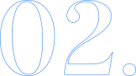
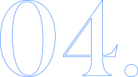
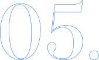

User Experience Designer | Web Designer
Service Designer | UI Specialist | User Researcher | Product Designer | Illustrator | Film Photographer | Frontend Developer
GRAD. COLLEGE WEBSITE REDESIGN

NEW GRADUATE PORTAL
SERVICE DESIGN BLUEPRINTING

OU MARKETING & PROMO MATERIAL

TRAVALLURE
DESIGN
WHEN I'M NOT WORKING, I LIKE TO STAY BUSY WITH WHAT I LIKE TO CALL
TREATS
CHOMPHAUS
Creating memories (and a fully designed cookbook) with my friends. The design goal of this project is to expand my design horizons by having each recipe page utilize a completely different design style.
Learn MoreTHE SOUNDBAR
Overhauled the branding and website for Listen Up OKC to better align with the goal of the business. Included a brand guide, photos and suggestions on how to improve the space, and a Wordpress site using Elementor and Astra.
Learn MoreFILM PHOTOGRAPHY
Capturing and documenting my favorite moments of each year and submitting to the occassional gallery from time to time.
Learn MoreABOUT ME
I'm Alex, a passionate UX designer based in Oklahoma City. Currently, I'm an essential part of the web team at the University of Oklahoma, where I'm engaged in opportunities to enhance OU's digital experience in a myriad of ways. Outside of my professional endeavors, I enjoy freelance work and diving into personal projects that allow me to explore new ideas and push boundaries. Whether it's collaborating with clients to bring their visions to life or tinkering with my own concepts, I'm constantly seeking out opportunities to innovate and refine my craft. When I'm not immersed in the world of design, you can often find me behind the lens of my beloved film camera, capturing moments and stories through the art of photography. There's something magical about the tactile process and timeless aesthetic of film that never fails to inspire me. I'm fueled by a curiosity for the world around me and a deep passion for creating meaningful connections through design. Let's connect and embark on a journey of creativity together!